This may be run through image -brightness <val>. This was implemented by scaling each color of each pixel by the given amount, clamping the values to remain within the range [0, 255]. Example given below:


This may be run through image -contrast <val>. This was implemented by first calculating the average luminance of the image, followed by linearly interpolating between each pixel color and that average luminance. Example given below:


This may be run through image -saturation <val>. This was implemented by linearly interpolating each pixel with a greyscale version of itself, clamping values to legal ranges. Examples given below:


This may be run through image -gamma <val>. This was implemented by converting the discrete color values into the continuous range [0, 1), and then raising them to the inverse of the value provided. Examples provided below:


This may be run through image -crop <x> <y> <width> <height>. This is done by creating a new image and dropping the unused pixels. This allows a photo from an old CSE 167 assignment revealing a bug to have the bug conveniently removed, as such:


This may be run through image -quantize <nbits>. This works by first reducing each pixel to the constraints given, then inflating that value back into the [0, 255] range expected in the bitmap. Examples are given below:
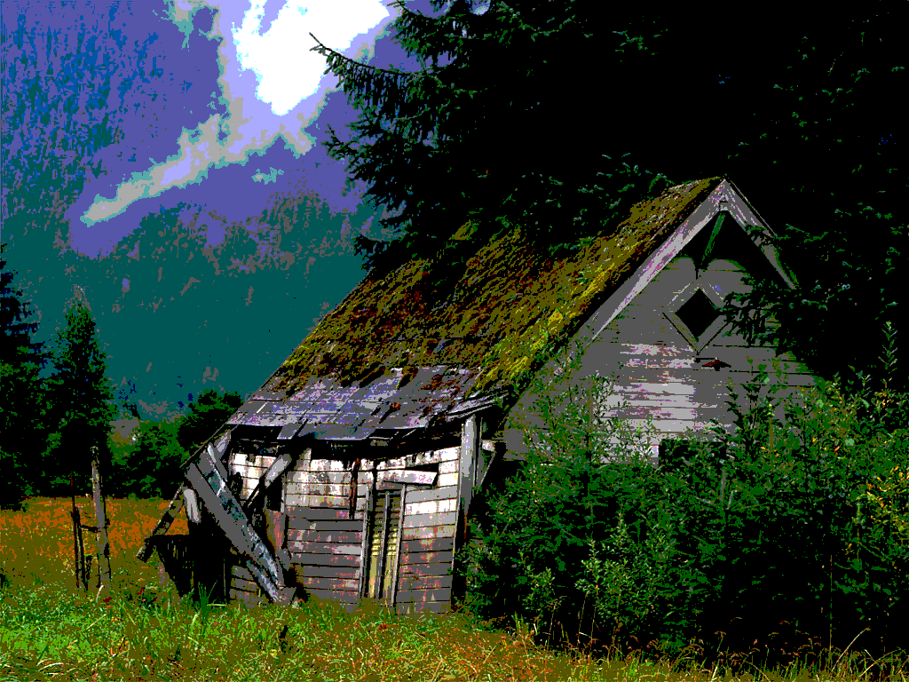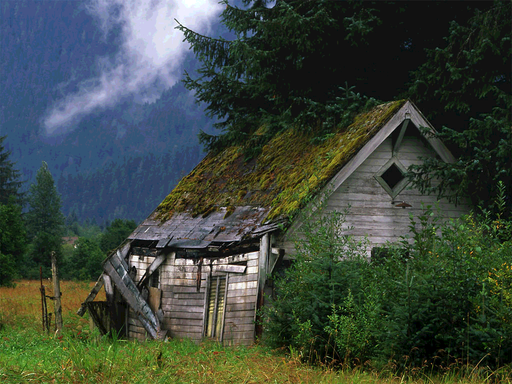This may be run through image -randomDither <bits>. This works by adding noise to the image prior to quantizing with the hope that this will reduce the sharp contours created by quantizing. Examples are given below:
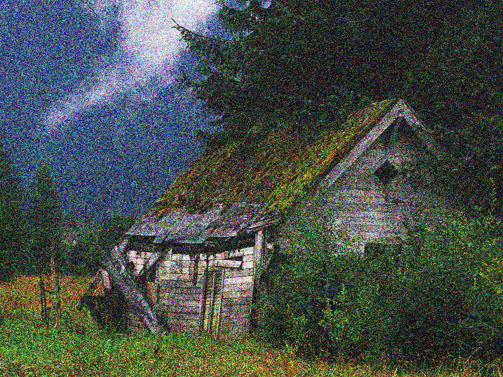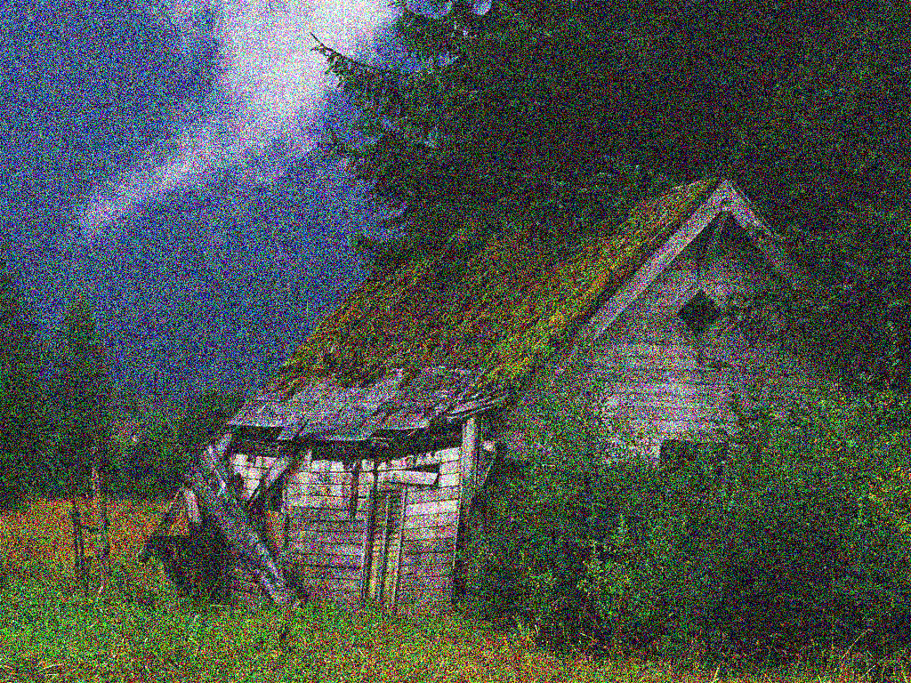This may be run through image -FloydSteinbergDither <bits>. This works by spreading the error created through quantization to neighboring pixels, with the intent that the result will be seen by users as similarly colored to the original. Examples are given below:
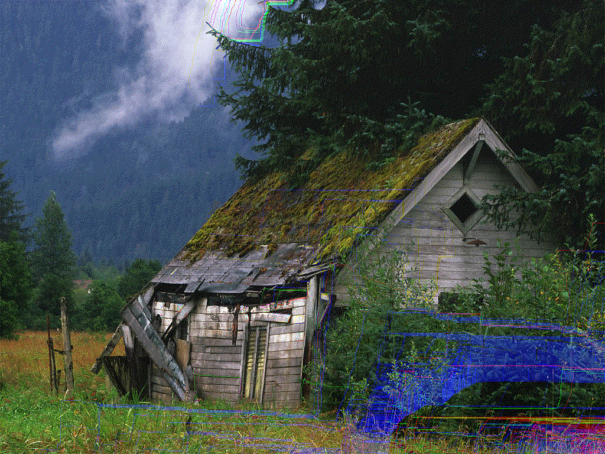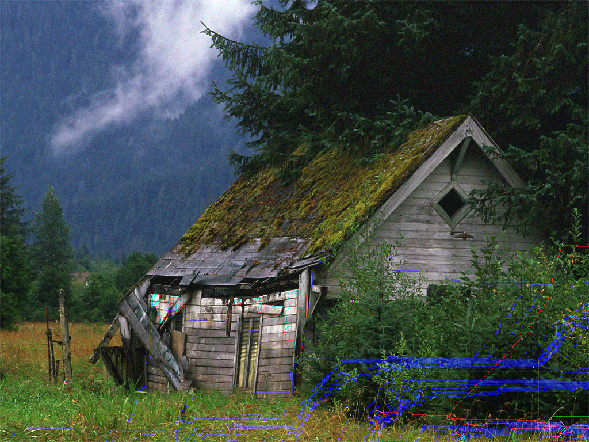This may be run through image -blur <n>. First, pixel weights are calculated in a single dimension along the Gaussian curve. This is then expanded to create a Gaussian matrix in two dimensions, and then fed through a convolution function. Examples are shown below:
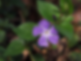This may be run through image -sharpen. The sharpness amount is hardcoded; a 3x3 convolution matrix is utilized which gives heavy weight to the center pixel and negative weights to its neighbors. Examples are shown below:

This may be run through image -edgeDetect <threshold>. This uses a Sobel filter which is passed through a convolution function in order to detect gradients. The gradients are then sent through a sieve which uses the provided threshold to determine the gradient speed required to count as an edge. Examples are shown below:
 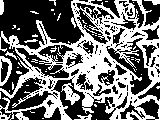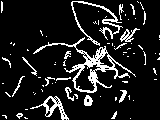
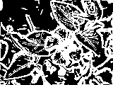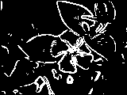This may be run through image [-sampling <num>] -size <x> <y>, with valid sampling numbers being 0 for nearest neighbor and 1 for hat. The respective filter is first applied along the x axis for stetching / shrinking, and then along the y axis for the appropriate operation. Mitchell filter had a late-emerging bug which has prevented its inclusion entirely; hat filter also had a similarly late-emerging bug, although it is still vaguely presentable. Examples are given below:
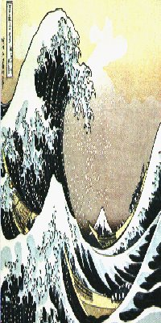This was not implemented... sadness fills the land.
This was not implemented...